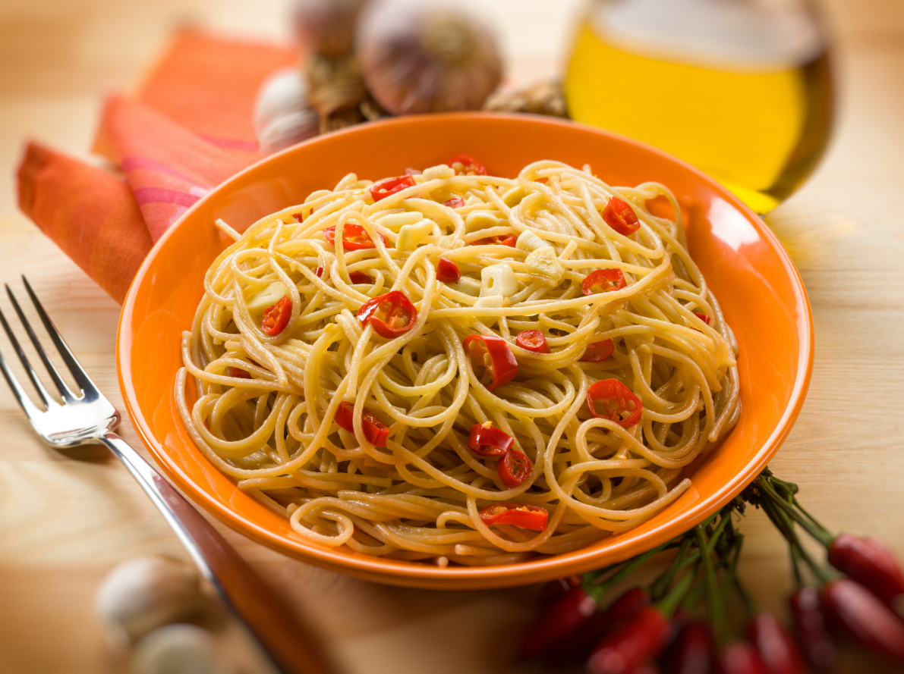

Spaghetti with Garlic and Oil

Description
Spaghetti Aglio e Olio is one of the simplest and most popular Italian pasta dishes. It’s made with just a few ingredients, yet it delivers incredible flavor.
Ingredients
- 200g spaghetti
- 4 garlic cloves, thinly sliced
- 5 tablespoons extra virgin olive oil
- Red pepper flakes (optional)
- Fresh parsley, chopped
- Salt to taste
Steps
- Bring a pot of salted water to a boil and cook the spaghetti according to the package instructions.
- While the pasta is cooking, heat the olive oil in a large pan over medium heat.
- Add the sliced garlic and cook until it turns golden and fragrant, being careful not to burn it. If you like a bit of heat, add a pinch of red pepper flakes.
- Drain the spaghetti al dente, reserving a cup of the pasta water.
- Add the drained spaghetti to the pan with the garlic and oil. Toss to combine, adding some reserved pasta water if needed to coat the pasta evenly.
- Serve immediately with a sprinkle of fresh parsley.